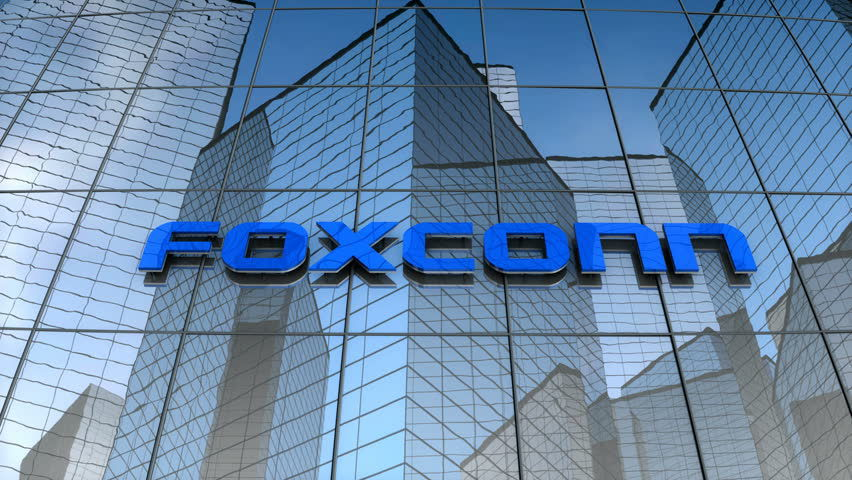

Hon Hai Precision Industry Co., Ltd., berbisnis dengan nama Foxconn Technology Group dan lebih dikenal sebagai Foxconn, adalah sebuah produsen elektronik multinasional yang berkantor pusat di Tucheng, New Taipei City, Taiwan. Pada tahun 2010, perusahaan ini adalah penyedia jasa manufaktur elektronik terbesar di dunia dan merupakan perusahaan teknologi dengan pendapatan terbesar ketiga di dunia.
Foxconn juga merupakan perusahaan dengan jumlah pekerja terbanyak di Taiwan dan merupakan salah satu perusahaan dengan jumlah pekerja terbanyak di dunia.Terry Gou adalah pendiri perusahaan ini.
Foxconn memproduksi barang elektronik untuk perusahaan besar asal Amerika, Kanada, Tiongkok, Finlandia, dan Jepang. Barang elektronik yang diproduksi oleh Foxconn meliputi perangkat BlackBerry, iPad, iPhone, iPod, Kindle,[10] Nintendo 3DS, Nintendo Switch, Nintendo Switch Lite, Nokia, Xiaomi, PlayStation 3, PlayStation 4, Wii U, Xbox 360, Xbox One, dan sejumlah soket CPU, termasuk soket TR4 CPU pada sejumlah motherboard. Hingga tahun 2012, Foxconn diperkirakan memproduksi 40% dari total elektronik konsumen yang berhasil terjual di seluruh dunia
Kisah Hon Hai dan pendirinya, Kuo Tai-ming dapat dipastikan berjalan beriringan dari awal hingga saat ini. Dikenal di Barat sebagai Terry Kuo, Tai-ming merupakan pemuda yang saat itu memperoleh pendidikan menjadi seorang pelaut. Namun pada awal 1970-an, ia memutuskan pindah jalur menuju dunia industri manufaktur.
Kuo dan saudaranya Kuo Tai-chiang mendirikan perusahaan plastik kecil di wilayah industri Tucheng, Taipei, Taiwan. Mereka menamai bisnis kecilnya dengan nama Hon Hai Plastics Corporation. Perusahaan itu awalnya mulai membuat komponen plastik untuk televisi hitam putih, yang populer pada masanya. Seiring perkembangannya, perusahaan dengan cepat menambahkan peralatan pembuat cetakan milik sendiri.
Lalu pada 1975, Kuo bersaudara mengganti nama perusahaannya menjadi Hon Hai Industrial Corporation. Mereka semakin tumbuh dan berkembang. Lantas pada gilirannya, penjualan mereka di tahun itu mencapai 16 juta dolar Taiwan (500 ribu dolar AS kurs tahun 2003).
Kuo Tai-ming berkomitmen untuk memimpin perusahaannya sampai ke pasar utama Taiwan. Komitmen itu ia tunjukkan lewat kerja keras yang bekerja enam hari seminggu, dan 15 jam dalam sehari.
Kuo dengan cepat mengenali potensi memproduksi komponen komputer. Dengan itu, ia segera memimpin perusahaanya mengembangkan rangkaian produk sendiri. Pada awalnya, ia menargetkan pasar konektor.
Dengan alasan menjaga persaingan di pasar internasional, Hon Hai pada 1981 menggunakan nama Foxconn. Hal itu sejalan dengan perubahan identitas Hon Hai yang menjadi bisnis spesialis konektor untuk industri komputer. Pabrikan milik Kuo berfokus pada produksi komponen yang lebih terkenal. Hon Hai melebarkan upayanya dengan memproduksi suku cadang untuk menghubungkan antarkomponen.
Pendapatan Hon Hai Precision Industry Co, perusahaan induk dari Foxconn Technology Group melonjak dalam tiga bulan pertama di 2021.
Berdasarkan laporan keuangan kuartal-I 2021 yang dirilis Hon Hai, Foxconn mencatat pendapatan sebesar 1,34 miliar Dolar Baru Taiwan atau sekitar Rp 681 miliar, meningkat 44 persen dibanding periode yang sama tahun lalu.
Di bulan Maret sendiri, pendapatan Foxconn tercatat senilai 441 juta Dolar Baru Taiwan atau sekitar Rp224 miliar, meningkat dari bulan sebelumnya yang sebesar 401 juta Dolar Baru Taiwan (204 miliar).
Peningkatan pendapatan Foxconn berkat penjualan iPhone 12 yang laris manis di pasar. Foxconn memang menjadi rekanan Apple untuk menufaktur aneka produknya.
Tak hanya iPhone, Foxconn juga membuat sejumlah perangkat elektronik lainnya dari berbagai vendor ternama, seperti Google, Intel, Sony, Microsoft, Nintendo, Xiaomi, dan masih banyak lagi.
Di saat yang sama, Foxconn memperingatkan kelangkaan komponen chip yang melanda dunia bakal berlangsung hingga 2022 mendatang.
Prediksi itu sejalan dengan prediksi yang dilontarkan oleh GlobalFoundries, pembuat chip terbesar ketiga di dunia sebagaimana dihimpun Bloomberg.
Chairman Foxconn Young Liu merasakan dampak kelangkaan chip di pasar saat ini dan Foxconn bakal mengurangi jumlah pengiriman (shipment) sebanyak 10 persen dari yang telah direncanakan.
"Pasokan komponen di dua bulan pertama pada kuartal pertama tahun ini sebenarnya normal, mengingat klien kami merupakan perusahaan-perusahaan besar," tutur Liu beberapa waktu lalu.